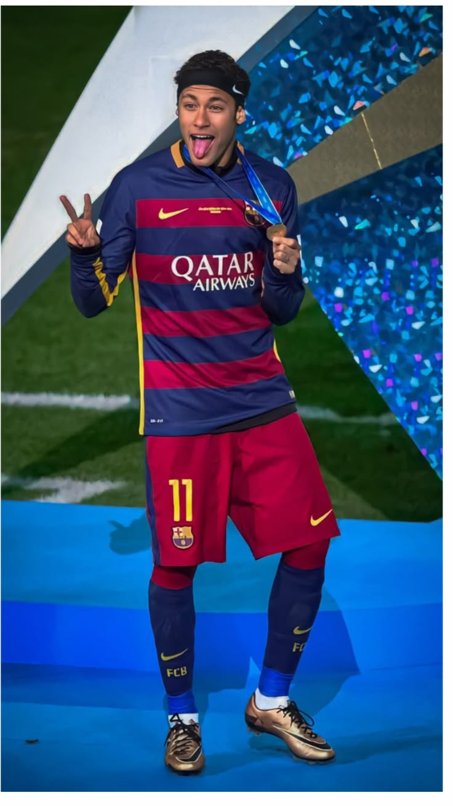
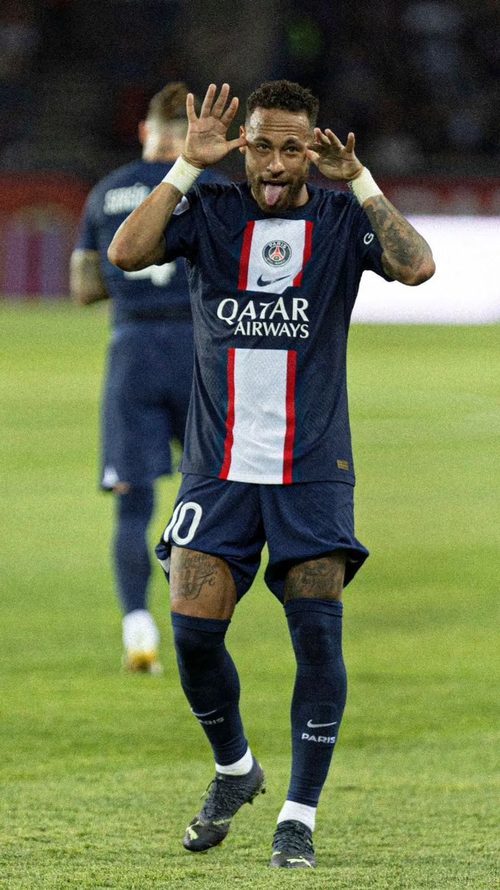
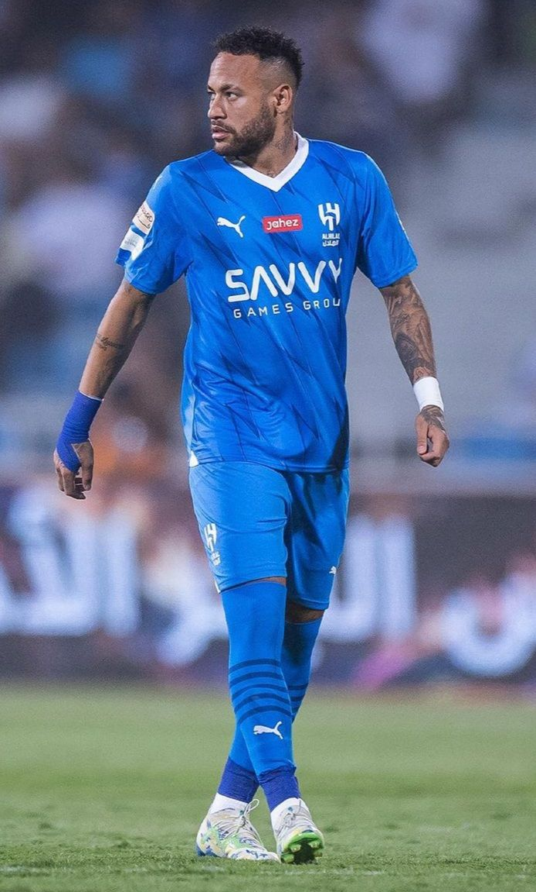

Uma carreira mundial

Santos ⚪⚫
Neymar surgiu para o futebol profissional no Santos. Conquistou títulos importantes e virou uma das maiores estrelas do futebol brasileiro.

Barcelona 🔵🔴
Na Espanha, Neymar formou o famoso trio MSN com Lionel Messi e Luis Suárez. Em 2015, conquistou a UEFA Champions League.

Paris Saint-Germain 🔵🔴
Neymar chegou ao PSG em uma transferência histórica. No clube francês, conquistou diversos títulos nacionais e chegou à final da Champions League em 2020.

Al-Hilal 🔵
Neymar iniciou uma nova etapa de sua carreira na Arábia Saudita defendendo o Al-Hilal.
Santos ⚪⚫
Em 2025, Neymar retornou ao Santos, clube onde começou sua trajetória profissional e se tornou conhecido mundialmente.